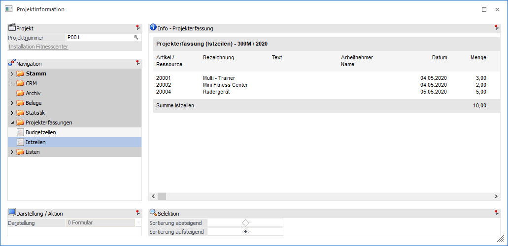
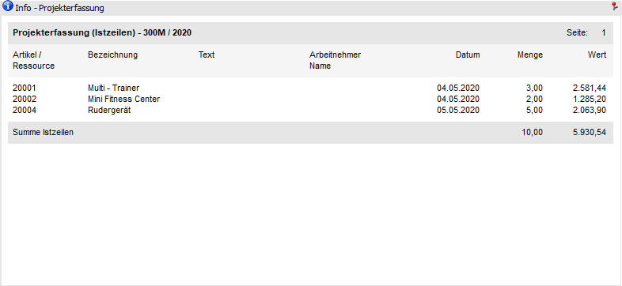
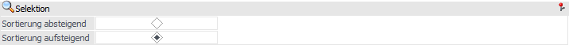

In dieser Ansicht werden die erfassten Istzeilen des Projekts angezeigt.

Die Ansicht "Istzeilen" besteht aus den folgenden Info-Elementen:
ü Info - Statistik
ü Selektion
Info - Projekterfassung

An dieser Stelle werden die Projekterfassung des Projekt (Typ "Ist"), gemäß der nachfolgenden Sortierung, dargestellt.
Selektion

In diesem Bereich kann die Sortierung der Projekterfassungen definiert werden, Die benutzerspezifische Speicherung der Einstellung erfolgt für die Ansichten "Budgetzeilen" und "Istzeilen" übergreifen.
Ø Sortierung Absteigend / Sortierung Aufsteigend
An dieser Stelle kann definiert werden, ob die Erfassungszeilen auf- oder absteigend sortiert ausgegeben werden sollen.